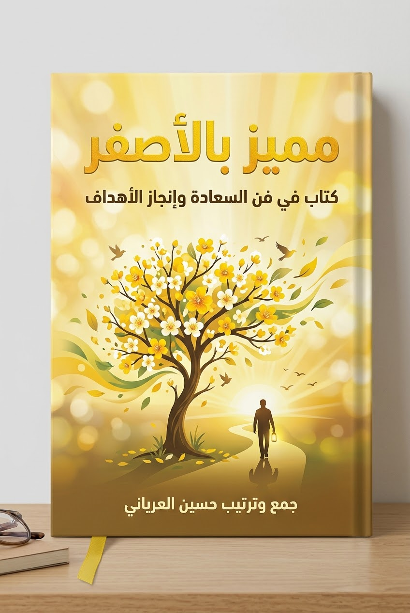

ما الكتاب؟ وكيف يُقرأ؟ وما الذي يميزه عن غيره؟
الحياة الطيبة تُبنى على أسس بسيطة متكررة يمكن لأي إنسان أن يتعلمها: الإحسان، والكرم، وتقدير المتع البسيطة، والتوجه الذهني الإيجابي، والزواج القائم على الالتزام، والأبوة الواعية. والكتاب مجموعة من القصص والاقتباسات المختارة حول هذه الأسس، يُراد منها أن تكون "مقرراً مختصراً" يُقرأ ويُراجع ويُعاد إليه.
يعرض المؤلفان الكتاب كمرجع تعليمي مختصر يقوم على "قلم التمييز الأصفر"، أي أن القارئ يُبرز ما يستحق التذكر. وتبدأ المقدمة بفتى في الثامنة سُئل عن عاداته الدراسية، فقال إن هناك مواد عادية ومواد مهمة، وإنه يحاول تذكّر المهم فقط. والفكرة التي يبنيها الكتاب على هذه الحكاية أن الحياة نفسها تشبه هذا "الصف المنعقد دائماً": نحن نُختبر يومياً، ولا نحتاج إلى تعلّم كل شيء، بل إلى تمييز الجوهري وممارسته.
يتكون الكتاب من ستة فصول رئيسية، هي بالترتيب: الإحسان، والكرم، والمتع البسيطة، والتوجه الذهني، والزواج، والأبوة. ويختم كل فصل بقسم بعنوان "واجبك" يقترح تطبيقات عملية صغيرة.
الكتاب ليس نظرية مجردة، بل تدريب يومي على الاختيار: أن تختار الإحسان في التفاصيل الصغيرة، والكرم بما تملك، وأن تلتفت إلى المتع البسيطة، وأن تختار توجهك الذهني، وأن تبني زواجك وأسرتك بالعناية المستمرة. وكل فصل يمثل مهارة من هذه المهارات.
في صباح ممطر، كان سائق سيارة يستمع إلى برنامج أسئلة ثقافية، فلم يعرف أياً من الإجابات: من الحائز على جائزة نوبل؟ من الفائز بجائزة بوليتزر؟ ومن هي ملكة جمال أمريكا؟ فجاءه سؤال من المذيع من نوع آخر: من قال لك إنه يحبك؟ ومن عانقك مؤخراً؟ ومن عاملته بإحسان؟ فتذكّر أطفاله وهم يقولون: "نحبك يا أبي"، فابتسم. والعبرة التي تتركها القصة أن دفء الحياة يصنعه الأصدقاء والجيران والأفعال البسيطة، لا المشاهير.
أفعال صغيرة تتم تلقائياً، لكنها تصنع أثراً يتجاوز صاحبها.
الإحسان لا يشترط أن يكون كبيراً أو مكلفاً؛ بل غالباً ما يكون لفتة صغيرة تنبع من الاهتمام بالآخر. وما يُعطى بإخلاص يعود على صاحبه بأكثر مما يتوقع، وأثره يتسع بطرق لا نراها.
يقدم الفصل الإحسان بوصفه العنصر الأول في الحياة الطيبة، ويوضح أنه لا يحتاج إلى مال كثير أو مناسبات كبيرة. ومن أبرز ما يعرضه الفصل أن الإنسان يجد في الإحسان سعادة داخلية تفوق ما يحققه الاستحواذ. وقد عرض الكتاب ستة عشر قولاً مأثوراً في الإحسان، منها ما يلي.
عامل كل شخص بالطريقة التي تحب أن يعاملك بها.
— إدوين ماركهامأفضل أجزاء الحياة هي أفعال الطيبة والكرم الصغيرة المجهولة.
— ويليام وردزورثضع قطعة معدنية في عداد موقف لشخص لا تعرفه.
— جان بول ريخترثلاثة أشياء مهمة في الحياة: أن تكون محسناً، وأن تكون محسناً، وأن تكون محسناً.
— هنري جيمسكن منفتحاً ومتاحاً؛ عامل كل شخص كأنك تتلقى زيارة من ضيف عزيز.
— كونفوشيوسلا تستهن أبداً بقوة كلمة إحسان أو فعل كريم.
— فرانك كرينلا تترك أبداً صديقاً يحزن وحده؛ فالصداقة تزيد السعادة وتخفف المعاناة.
— جوزيف أديسونمارس التعاطف، وحاول أن ترى الأمور من وجهة نظر الآخرين، فكل شخص يخوض معركة.
— أفلاطونأجمل صنيع تسديه لنفسك أن تصنع شيئاً جميلاً من أجل شخص آخر.
— جورج بيرنزإذا رأيت أسرة تقف بجوار سيارتها المعطلة تحت المطر، فاحمل مظلات رخيصة في سيارتك لتقدمها لهم.
— سالي كوتشعند مرورك بأسرة تشق طريقها في موقف صعب، أعطهم إشارة تشجيع برفع الإبهام.
— جويس هيفلرعند سماع بوق سيارة إسعاف، ادعُ بالشفاء للشخص الراقد بداخلها.
— لورد ألفريد تينيسونإذا جاءك أحد طالباً العون، فلا تقل "كان الله في عونك" ثم تتركه، بل اعتبر نفسك أداة يسّرها الله لمساعدته.
— قول حكيمإن كنت تعرف فقيراً فابعث له ورقة نقدية دون أن تفصح عن اسمك.
— صاموئيل هولدنسونابحث عن الخير في الناس ولن تتحدث بسوء عن أحد.
— بنيامين فرانكلينامسك بالصديق الحقيقي بكل ما أوتيت من قوة.
— مثل نيجيريفلاح اسكتلندي فقير ينقذ صبياً غرق في مستنقع طيني، فيعرض عليه والد الصبي (اللورد) مكافأة مالية، فيرفضها الفلاح، ويكتفي بأن يتعلّم ابنه أفضل تعليم ممكن. وابن الفلاح هو سير ألكسندر فلمنج مكتشف البنسلين. ولاحقاً أُصيب ابن اللورد بالالتهاب الرئوي فأنقذته الأدوية المستخلصة من البنسلين. (يذكر بعض رواة القصة أن ابن اللورد هو ونستون تشرشل؛ وهذا التحديد ليس في نص الصفحات المقروءة بصرياً، وقد أوردته هنا على أنه رواية متداولة.)
يروي الكاتب ويليام جيه. ليدرر أنه في ديسمبر 1961 حُوّلت طائرة من نيويورك إلى لوس أنجلوس بسبب الضباب إلى مطار في أونتاريو، ثم وصلت إلى مطار لوس أنجلوس في السابعة وربع صباحاً، فوجد آلاف المسافرين المتأخرين بلا طعام، والفوضى تعم المكان. ظهر فجأة رجل قصير بدين ذو وجه مبتهج يرتدي قبعة حمراء ولحية بيضاء، يدفع عربة قهوة وكاكاو ساخن ويوزعها مجاناً، يمازح الأطفال ويهدّئ الغاضبين. وحين سُئل: لحساب أي شركة تعمل؟ قال: "إنني لا أعمل لحساب أحد، إنني أستمتع فحسب. في كل ديسمبر أقضي إجازتي أسبوعين في مساعدة المسافرين؛ إنها هدية العيد التي أهديها لنفسي." ثم سأل الكاتب نفسه: هل هناك من يفعل الخير دون انتظار أي مقابل؟ وأجاب: نعم، وقد رأيت شخصاً كهذا.
في ليلة ممطرة من عام 1891 (وليس 1871 كما ورد في نموذج HTML السابق) امتلأ فندق فيلادلفيا عن آخره، فطلب زوجان عجوزان غرفة، فعرض عليهما الموظف الشاب جورج سي. بولدت غرفته الخاصة. وفي الصباح قال العجوز له: "أنت الرجل الذي ينبغي أن يكون مدير أفضل فنادق الولايات المتحدة، وربما أبني لك يوماً فندقاً تديره." وبعد سنتين دعاه إلى نيويورك وأراه مبنى والدورف أستوريا، وعيّنه أول مديرٍ له. وظل بولدت مخلصاً للفندق ثلاثاً وعشرين سنة حتى وفاته عام 1916.
يصف الكتاب مواقف لمتطوعين يقفون بجانب صناديق التبرعات، ومنها موقف يحكي فيه الراوي أنه كان في عشية عيد باردة يدق جرس صندوق التبرعات، فدخل رجل عجوز مرتدياً ملابس متواضعة، ووضع في الصندوق عملات قليلة قائلاً: "ليس بإمكاني أن أمنع نفسي!"، وتعلم الراوي من هذا المشهد أن الكرم فرح يتجاوز الحسبة المادية، وأن التألق في عيني رجل عجوز عند العطاء هو جوهر الكرم نفسه.
اللطف والإحسان عنصر أساسي من عناصر الحياة الطيبة، وليس بالضرورة أن يكون كبيراً؛ إليك ما يقترحه الكتاب:
العطاء من الوقت والمال والذات، وكيف يثري المعطي قبل المعطى له.
الكرم لا يُفقر صاحبه؛ بل يثريه. والإنسان يجد السعادة حين يريدها للآخرين لا حين يلتمسها لنفسه. وعطاء الوقت والاهتمام بالناس لا يقل أهمية عن عطاء المال.
يطرح الفصل الكرم بوصفه أشمل من التبرع المالي؛ فهو يشمل الوقت والجهد والمعرفة والدم والأعضاء، بل والذات نفسها. وقد أورد الكتاب أكثر من عشرين قولاً في هذا المعنى، منها:
اختر مؤسسة خيرية في منطقتك وساندها بسخاء بوقتك وما تملك.
— ماري روز ماكجريديخصص بضع ساعات كل شهر لتوصيل الطعام للعجائز والمحتاجين؛ يزداد الإنسان نضجاً حين يشعر أن اهتمامه بالآخرين يفوق انشغاله بنفسه.
— جون ماكنوتونلا تأوِ إلى فراشك ليلاً دون أن تكون قادراً على القول: "لقد جعلت شخصاً ما أكثر حكمة، أو أكثر سعادة، أو على الأقل أفضل حالاً هذا اليوم."
— تشارلز كينجزليالكرم لا يتسبب أبداً في فقر المعطي، إنه يثري حياة من يمارسونه.
— دوايت دي. أيزنهاورينبغي أن نعطي تماماً كما نحب أن نأخذ: بابتهاج، وبسرعة، وبلا تردد.
— سينيكاوقّع بطاقة التبرع بالأعضاء واحملها معك؛ لا ينبغي أن نعطي مما نملك فحسب، بل يجب أن نعطي من أنفسنا.
— ديزيري جوزيف ميرسييرتبرّع بلتر من دمك كل عام؛ أحياناً عندما أفكر في النتائج الهائلة المترتبة على أشياء بسيطة، أكاد أتصور أنه ليس هناك شيء صغير.
— بروس بارتونإذا كنت لا تصنع المعروف ولا تعطي الصدقات، فإنك مصاب بأسوأ أنواع مرض القلوب.
— بوب هوبشارك معرفتك؛ لو أنك كنت سبباً في إحياء شيء جميل في نفوس الناس، فإنك تكون قد قطعت خطوة نحو خلود ذكرك.
— نورمان كازينزفي المرة القادمة التي تطلب فيها طعاماً خارج المنزل، امنح النادل بقشيشاً سخياً؛ سيثير هذا دهشته ويدخل عليه السرور.
— شكسبير"السؤال الأكثر إلحاحاً في الحياة هو: ما الذي تفعله من أجل الآخرين؟"
— مارتن لوثر كينج الابنعلّم أطفال الحي درساً عن القيم؛ فالمعلم يترك أثراً غير محدود، ولا يمكن أن يعرف إلى أي حد سيصل تأثيره.
— هنري آدامزلا تنسَ أبداً أن قيمتنا تُقدَّر في الأساس بما نعطيه، لا بما نأخذه.
— قول حكيمادفع مصاريف ذهاب طفل فقير إلى معسكر صيفي؛ لم تعش يوماً مثالياً ما لم تكن قد فعلت شيئاً من أجل شخص لن يتمكن أبداً من سداد الدين لك.
— روث سميلتزرأسعد الناس ليسوا أولئك الذين ينالون المزيد، إنما أولئك الذين يعطون المزيد.
— إتش. دبليو. سيلفسترلا تغبط الناس على ثرواتهم، ولكن على الطرق الكريمة والإبداعية التي يستخدمون بها ثرواتهم.
— ألبرت آينشتاينتبرّع بنسبة لا تقل عن خمسة بالمائة من دخلك لأعمال الخير؛ إن الله لا ينعم علينا بالراحة لكي نستريح، وإنما لكي نساعد الآخرين على الارتياح.
— جيه. إتش. لافيتكن مثالاً لما تريد أن تراه ينتشر في العالم.
— ألبرت آينشتايناحسب ثروتك بما سيتبقى لديك إذا فقدت كل مالك؛ ولو أن كل ما سيذكرني به الناس أنني كنت لاعب كرة سلة جيداً، فإنني أكون قد أهدرت بقية حياتي.
— إيزيا توماسفتاة صغيرة تُدعى هاتي في فيلادلفيا حزنت لأن قاعة درس الأحد صغيرة لا تتسع لرفاقها الفقراء، فقامت بأعمال منزلية بسيطة وجمعت بعض المال. وتوفيت هاتي بعد عامين، فوجد والداها تحت وسادتها محفظة قديمة بها 57 بنساً ورسالة بخط يدها: "هذا المال لتوسيع قاعة الدرس حتى يتمكن المزيد من الأطفال من الحضور." حمل المدرّس المحفظة إلى الدرس، وعُرضت أرض مميزة للبيع، فقال أحد الحاضرين: "سأبيعها مقابل البنسات السبعة والخمسين"، فانتشرت القصة وتوالت التبرعات، واليوم يتسع المبنى لـ3300 شخص. وكل ذلك بدأ بفتاة صغيرة أرادت المساعدة.
في قرية فيتنامية صغيرة سقطت قذائف هاون على دار أيتام تديرها مجموعة خيرية؛ فقُتل بعض العاملين، وجُرح عدد من الأطفال، منهم فتاة في الثامنة تقريباً تحتاج إلى نقل دم فوري. وصل طبيب أمريكي وممرضة، فتبين أن فصيلة دمهما لا تناسب الفتاة، ولم يكن لدى أغلب الأطفال الجرحى الفصيلة المطلوبة. فطلب الطبيب والممرضة من الأطفال التبرع، فرفع الفتى هينج يده، ورقد على فراش من القش، وبكى بصمت؛ ثم تهدّج صوته، فسألته الممرضة بالفيتنامية، فاستقر ثم قال: "لأنها صديقتي". وتبين أن هينج ظن أنه سيموت، وأن هذا كل دمه يُطلب لإنقاذ صديقته. والعبارة المختمة للقصة: "ليس هناك حب أعظم من هذا الحب: أن يهب الإنسان حياته من أجل صديق." (المؤلف المذكور للقصة: جون دبليو. مانسور)
في سنوات مضت كان فتيان يدرسان في جامعة ستانفورد، وقد نفدت مواردهما، فاقترحا جلب عازف البيانو الشهير إغناسي باديروسكي لحفل موسيقي لتغطية رسوم تعليمهما. طلب مدير أعماله 2000 دولار، فلما جُمعت التذاكر لم يتجاوز المبلغ 1600 دولار؛ فقدماه له مع كمبيالة بـ400 دولار، فمزقها إلى نصفين وقال: "خذا من هذا المبلغ رسوم التعليم، وليأخذ كل واحد منكما 10% مقابل جهده، وسأكون راضياً بالمبلغ المتبقي." وبعد سنين أصبح باديروسكي رئيس وزراء بولندا بعد الحرب العالمية الأولى، فطلب المعونة من هربرت هوفر (رئيس مكتب الإغاثة الأمريكي)، فأرسل آلاف الأطنان من الطعام. ولما جاء باديروسكي إلى باريس ليشكره، قال له هوفر: "لربما لا تذكر ذلك، لكنك ساعدتني ذات مرة عندما كنت طالباً بالجامعة."
تدخر الطفلة إميلي (تسع سنوات) مصروفها طوال العام لتشتري دراجة لتسلق الجبال. وفي موسم الأعياد، رأت متطوعاً يدق جرساً بجوار صندوق تبرعات، فسألت والدها: "هل يمكن أن نعطيه شيئاً؟" ثم قررت أن تتبرع بمدخراتها. ورأى الأب أن تاجر سيارات محلياً يجمع الدراجات المستعملة ويجددها ويعطيها للأطفال الفقراء، فتبرع الأب بدراجتين قديمتين، فأعطاه التاجر تذكرتين ليانصيب خيري، فربحت إحداهما دراجة جبلية جديدة للفتيات. وقالت الأم ضاحكة: "لست أنت الفائز، إميلي هي الفائزة." ويقول الراوي إنها ربما مصادفة، لكنه يحب الاعتقاد بأن الله شاء أن يكافئ فتاة صغيرة على تضحية تفوق سنها.
يستشهد الفصل بمثل أيرلندي ارتبط ببرنامج إيواء دولي: "إننا نحتمي في ظل بعضنا البعض"، ويدعو القارئ إلى المشاركة في بناء مساكن للفقراء وإشراك الأبناء في مواقف الكرم، لأن الاهتمام بالآخرين يحقق للإنسان وأسرته تقدماً في الحياة لا تحققه أي درجة علمية.
ساعات قليلة شهرياً في خدمة الآخرين تغيّر الإنسان نفسه قبل غيره.
الكلمة الطيبة والاهتمام والإنصات من أشكال الكرم الأكثر تأثيراً.
ما يُعطى للشخص الواقف بجوارك يعود إليك في النهاية (إدوين ماركهام).
"لا تذكّر أحداً بمعروف قدّمته له؛ اصنع المعروف ثم انسَ أمره" (شفايتزر).
اختر كل أسبوع فعلاً كريماً واحداً واكتب لنفسك: ما الذي أعطيته؟ وكيف شعرت؟ ومن استفاد؟ ثم راجع بعد شهر هل صار العطاء عادة.
ما تعطيه دائماً يعود عليك ببهجة أكبر مما تأخذه؛ وعندما تطبقه عملياً يصبح الكرم أسلوب حياة. إليك أفكار الكتاب:
السعادة الحقيقية غالباً في الأشياء الصغيرة التي نمر عليها كل يوم.
كثير من الناس يبحثون عن السعادة بعيداً، بينما تكمن في متعة بسيطة أمام أعينهم: زهرة، أو غروب، أو حديث مع طفل، أو كوب شاي. وتذكّر النعم الصغيرة يحمي الإنسان من الجحود والضجر.
تقول آن مورو ليندبيرغ في كتابها الكلاسيكي "Gift from the Sea" ما معناه: ليست حياة البساطة هي التي يحذرنا منها الحكماء، وإنما حياة الدعة والتشتت. وتُذكّر الحياة كل واحد منا بأن يتوقف قليلاً ويتمتع بمتعه الصغيرة: شروق الشمس وغروبها، وحقول الأزهار، ورائحة الخبز الطازج، واحتضان الزهور، والاستغراق في ضوء القمر، وسماع كلمة "أحبك"، وهدهدة الطفل الرضيع، وارتداء الملابس القديمة المريحة. ويضيف الفصل أن كل إنسان يقدّر القريب والغالي على قلبه بطريقته الخاصة.
"عاماً بعد عام، تزداد تعقيدات هذا العالم سريع التقلب إرباكاً وصعوبة، ولهذا فإننا نكون أكثر حاجة كل عام إلى البحث عن الهدوء والسكون والارتياح في الأمور البسيطة المبهجة."
— من مجلة Woman's Home Companion (ديسمبر 1935)يرى الراوي في أحد مشاهد غروب شيكاغو الرائعة، قرب متحف الفنون، سرباً ضخماً من الأوز يحلّق نحو الجنوب، والمتسوقون يسرعون في موسم الأعياد دون أن ينتبهوا. ويلاحظ سيدة مشردة تقف على بعد خطوات، تتابع السرب بعينين مبتسمتين؛ فيتبادل معها ابتسامة صامتة، ثم تقول بصوت خافت: "كم أنعم الله عليّ!"، فيستغرب الراوي كلماتها في ظروفها، ثم يدرك أن مشهد الأوز كان هدية لها، وأنه كان كل ما تحتاجه، ويقول: "كم أحسدها".
(حكاية منسوبة إلى إيسوب) رجل يملك ذهباً مدفوناً في الأرض، يعود إليه كل يوم ليُحصيه قطعة قطعة دون أن ينفق منه شيئاً. لاحظه لص فسرق الكنز، فلما اكتشف الرجل خسارته غرق في الحزن. فقال له جاره: "لا تحزن إلى هذا الحد! ادفن بعض الحجارة في الحفرة وتخيل أنها ذهب؛ ستؤدي الغرض بنفس الكفاءة، لأنك لم تكن تنفق شيئاً من الذهب عندما كان موجوداً!"
نص أدبي شجي كتبته ديبورا إي. هيل وهي في السجن، تصف فيه شوقها إلى الحرية من خلال تفاصيل بسيطة: أن ترقص في فستان يدور ويرتفع حولها، وأن تشعر بملمس الحرير، وأن ترقد في فراش نظيف، وأن تشرب القهوة الساخنة في شرفتها، وأن تسمع نباح كلبها، وأن تتمشى حافية القدمين، وأن تشم رائحة الطعام، وأن تقف على باب حجرة ابنها النائم فتلمس وجهه وتمرر أصابعها في شعره، ثم تطوّقه بذراعيها حتى يضحك قائلاً: "كفى يا أمي!"، وتتمنى أن تكون حرة لتفعل ذلك مرة أخرى.
(يرويها أنتوني دي ميلو) رجل أعمال شمالي غني يرى صياداً جنوبياً مستلقياً بجوار قاربه يدخن غليونه. قال له: "لماذا لا تخرج للصيد؟" أجاب: "لأنني اصطدت ما يكفي لهذا اليوم." قال: "لماذا لا تصطاد أكثر؟" قال: "وماذا أفعل بالمزيد؟" قال الرجل: "تكسب المزيد، وتشتري قارباً أكبر، وتتوسع، ثم تصبح ثرياً وتتقاعد، عندها تستمتع بالحياة حقاً." فقال الصياد: "وما الذي تظنني أفعله الآن؟"
ازرع الزهور في كل ربيع.
— إيريس موردوخالعنصر الذي لا غنى عنه في جميع الأطعمة الجيدة التي تُطهى في المنزل هو حب من تُطهى لهم.
— صوفيا لورينفكّر أفكاراً عظيمة، ولكن استمتع بالمتع الصغيرة؛ كثير من الذين يذهبون بعيداً بحثاً عن السعادة يتركونها خلفهم في أقرب الأماكن.
— ديفيد جريسونارعَ كلباً واهتم به؛ فامتلاك كلب وفيّ يجعلك إنساناً ثرياً مهما قلّت ممتلكاتك.
— لويس سابينقف وراقب فلاحاً يحرث حقله؛ أن تشاهد الذرة وهي تنمو، أن تأخذ نفساً عميقاً وأنت تعمل، أن تقرأ وتفكر وتحب وتدعو الله: هي الأشياء التي تجعل الإنسان سعيداً.
— جون راسكينتعلّم العزف على آلة موسيقية؛ فالموسيقى تثبّت القوة في الأوصال والأفكار في العقل.
— جورج إليوتاحتفظ بدفتر يومياتك؛ إذا كانت حياتك تستحق أن تُعاش فهي تستحق أن تُسجَّل.
— ماريلين جرايلا تتجاهل المتع الصغيرة أثناء بحثك عن المتع الكبيرة: طقطقة النار، وغروب الشمس، وحضن طفل، وقبلة خلف الأذن.
— جون أنتونيلا تجعل ممتلكاتك تمتلكك؛ كلما زاد ما تملكه زاد ما يجب عليك الحرص عليه.
— أليس دورمانما بين الحين والآخر، شاهد حلقة من أحد برامج الأطفال؛ إننا لا نكون أطفالاً سوى لوقت محدود، لكننا نستطيع الاحتفاظ بالطفولة بداخلنا إلى الأبد.
— بروك تولليارقد على ظهرك وانظر للنجوم؛ ابتهج بالحياة لأنها تمنحك فرصة أن تحب وتلهو وتنظر نحو النجوم.
— هنري فان دايكاجمع كومة من أوراق الشجر كل خريف واقفز فيها مع من تحب؛ فأبسط الأشياء هي التي تعطي أعظم سعادة عند تذكرها.
— بوب هوباقضِ بعض الوقت في شم عبير الزهور؛ فنحن جميعاً نميل إلى تأجيل العيش، نحلم بحديقة سحرية في الأفق بدلاً من الاستمتاع بالأزهار على عتبات نوافذنا.
— ديل كارنيجياستمتع بدش ساخن؛ فالأفعال العادية التي نقوم بها كل يوم في المنزل أكثر أهمية للروح مما توحي به بساطتها.
— توماس مورابدأ كل يوم بسماع موسيقاك المفضلة؛ الموسيقى حب يبحث عن كلمات.
— سيدني لانيرليكن هناك دائماً شيء جميل في مجال رؤيتك، حتى لو كان زهرة ربيع في إناء زجاجي؛ فجمال العالم من حولنا يعتمد على ما نقدمه نحن للعالم.
— رالف والدو إيمرسونأستيقظ كل صباح وأقول: يا إلهي، تكفيني النعم التي وهبتني إياها؛ فقط أرجو أن تديمها عليّ.
— كيتي هارت"الأحمق يبحث عن السعادة بعيداً، والحكيم يزرعها تحت قدميه."
— جيمس أوبنهايم"أغنى الناس هو من يرضى بالقليل."
— سقراطالفصل لا يدعو إلى الزهد، بل إلى إعادة ترتيب الانتباه: أن يرى الإنسان ما بين يديه، وأن يفرّق بين الامتلاك والتمتع، وأن يجعل النعم اليومية جزءاً من وعيه.
بينما تدفع وترتطم بالجداول الزمنية والمواعيد النهائية، من السهل أن تنسى أن الرضا غالباً يُوجد حيث أنت وبما تملكه الآن. إليك ستة أنشطة بسيطة:
الموقف الذي نختاره يحدد ما نراه في الحياة ونتيجته.
التوجه الذهني أهم من الماضي والتعليم والمال والنجاحات والظروف، وهو قرار يومي نملكه. فالتوجه الإيجابي يفتح طرقاً، والسلبي يغلقها، والحياة تتشكل بما نختار أن نراه فيها.
يرى الكاتب أن أهم قرار يتخذه الإنسان يومياً هو اختيار التوجه الذهني الذي يتبناه؛ فهو يتقدم بالإنسان أو يعرقله، وهو وحده يشعل وقود الحماس أو يقتل الأمل. وعندما يكون التوجه سليماً "لا تكون عقبة أصعب من أن أتجاوزها، ولا حلم أصعب من أن أحققه، ولا تحدٍّ أعظم من أن أواجهه".
"هناك جانب إيجابي وجانب سلبي لكل شيء، وفي كل لحظة أقرر لأي جانب أنظر."
— وليام جيمسيحاصر كلب قطة في زاوية، فتنفش القطة ظهرها وتضاعف حجمها وتصدر هسهسة كالثعبان وتخدش الهواء بمخالبها؛ فيقرر الكلب فجأة أن الحكمة تقتضي الذهاب لمطاردة السناجب في المتنزه. يقول الكاتب: ليس بإمكان قطة أن تتفوق على كلب دوبرمان وزنه خمسة وسبعون رطلاً، لكن توجهها الذهني جعلها تبدو قادرة. ونحن نقابل "كلاباً نابحة" كل يوم، والتوجهات الذهنية التي نتبناها تتفوق على الحقائق والمواقف، فنستطيع أن نقرر أن نكون أكبر من ظروفنا.
مسافر يقترب من مدينة كبيرة محاطة بالأسوار، فيجد عند بابها رجلاً عجوزاً جالساً تحت شجرة، فيسأله: "كيف حال الناس في هذه المدينة؟" فيقول له: "كيف كان حال الناس في المكان الذي جئت منه؟" فيجيب: "كانوا حقراء وبغضاء في الغالب." فيقول العجوز: "ستجدهم هنا على نفس الشاكلة." ثم يمر مسافر آخر فيسأل السؤال نفسه، فيعيد العجوز سؤاله، فيجيب: "كانوا لطفاء وكرماء ومحبين." فيقول: "ستجدهم هنا على نفس الشاكلة."
يعرض الفصل "عقيدة المتفائل" لكريستيان دي. لارسون، وفيها: أن تكون أقوى من أن يعكّر شيء راحة بالك، وأن تتحدث عن الصحة والسعادة والرخاء مع من تلتقيهم، وأن تجعل أصدقاءك يشعرون أن لهم شيئاً مميزاً، وأن تنظر إلى الجانب المشرق من كل شيء، وأن تفكر في الأفضل وتعمل له وتتوقعه، وأن تتحمس لنجاح الآخرين كحماسك لنجاحك، وأن تنسى أخطاء الماضي، وأن تبتسم في وجه كل مخلوق، وأن تكون أكبر من أن تقلق، وأنبل من أن تغضب، وأقوى من أن تخاف، وأسعد من أن تسمح بوجود المتاعب.
تذكّر أنك قد تفقد الكثير من الأشياء الطيبة في الحياة بتبنّي توجه ذهني سيئ؛ فالحياة هي ما نصنعه بأنفسنا.
— آنا ماري روبرتسون (جرانما موزيس)اصفح بسرعة؛ فقد تعلمت من كلبي وقطتي درساً عظيماً: أن أنسى كثيراً.
— سوزان كارلسوناقضِ حياتك في الارتقاء بالناس لأعلى، لا في التقليل من شأنهم؛ فالإساءة إلى الناس عادة بغيضة أياً كان وضعك.
— مجهولحقق أقصى استفادة من أفضل الأشياء، وقلّل الضرر من أسوأها؛ وتتبّع السعادة باختيار الأوقات التي تتذكرها دائماً.
— مجهولتذكّر الموارد الثلاثة المؤثرة المتاحة لك دائماً: الحب، والدعاء، والصفح. وفي الليل أسلم أمري كله إلى الله؛ فهو الذي لا ينام.
— كاري ويستنجسونتذكّر أن السعادة تنتج عن إيثار الآخرين على نفسك؛ فللماذا لا تشعر بالسعادة؟ لأن تسعاً وتسعين بالمائة مما تفعله وتقوله وتفكر فيه من أجل نفسك.
— وو واي ووكن مبتهجاً حتى عندما لا تشعر بأنك تريد ذلك؛ ففي بعض الأوقات لن تكون هناك أغنية في قلبك، فغنِّ على أي حال.
— إيموري أوستنتذكّر أن دقيقة واحدة من الغضب تحرمك من ستين ثانية من السعادة.
— روث إي. رينكلعندما تصل إلى عملك صباحاً، اجعل أول ما تقوله يُبهج يوم الجميع؛ فالسعادة معدية، فكن ناقلاً للعدوى.
— روبرت أوربينلا تنتحب؛ وإن كنت مصاباً بالصداع أو أي بلاء فاحفظ هدوءك ولا تفسد اليوم.
— رالف والدو إيمرسونلا بأس أن تشعر بالأسى لنفسك، لكن لا تجعله يدوم أكثر من خمس دقائق؛ فالأفكار التي يركز عليها العقل تزداد اتساعاً ورسوخاً.
— نورمان فينسنت بيلكن سعيداً بما تملك بينما تسعى لامتلاك ما تريد؛ فقد وهبني الله الكثير حتى إنه ليس لدي وقت للحزن على ما حرمني منه.
— هيلين كيلرلا تتعامل مع الأصدقاء الأوفياء، أو الصحة الجيدة، أو الزواج الصالح، على أنها أمور مسلَّم بها.
— كوبي ياماداًلا تحمل حقداً؛ بينما تتعذب أنت بحقدك، يستمتع من تحقد عليه بوقته.
— بادي هاكيتكن مستعداً للصفح عن أخطاء الآخرين بنفس السهولة التي تنسى بها أخطاءك.
— إكناث إيزوارانلا تستخف أبداً بتأثير الضحك؛ وإذا كان عليك أن تختار سمة واحدة تقطع بها الحياة، فاختر حس الدعابة.
— جنيفر جيمسكلما كنت أكثر رضاً عن نفسك، قلّت الأشياء المادية التي تحتاج إليها؛ فالغنى ليس في كثرة الأغراض، بل في الرضا وهدوء البال.
— حكيملا تقلل أبداً من قدرة الروح البشرية؛ فالعالم مليء بالمعاناة، لكنه مليء كذلك بالقدرة على التغلب عليها.
— هيلين كيلرشارك الفضل؛ فليس هناك إنسان عصامي صنع نفسه وحده، فأنت لا تحقق أهدافك إلا بمعاونة الآخرين.
— جورج شينتعلّم أن تضحك على نفسك؛ فسعيد من تعلّم أن يضحك من نفسه.
— جون باولتحمّل مسؤولية كل مجال من مجالات حياتك؛ كفّ عن توجيه اللوم للآخرين، فلابد أن نصنع التغيير بأنفسنا.
— كاثرين هيبورنقيّم نفسك بمعاييرك الخاصة، لا بمعايير غيرك؛ حاول أن تكون أفضل الناس من أجل نفسك لا من أجل الناس.
— ماركوس جارفيالحياة عبارة عن 10% أحداث تقع لي، و90% استجابة مني لتلك الأحداث.
— ينسب الكتاب القول إلى المدرب لو هولتزتعلّم أن تشعر بالارتياح في وجود المشكلات؛ فهنا يكمن النمو الشخصي والفرص.
— جين نيكولاس جرولما تراه يعكس تفكيرك، وتفكيرك يعكس اختيارك لما تريد أن تراه.
— من كتاب A Course in Miracles"رجل بدون حس دعابة يشبه عربة بدون زنبركات للعجلات؛ إنه يهتز بعنف عند الاصطدام بأصغر حصاة على الطريق."
— هنري وارد بيتشر"عيش الحياة ليس خياراً مطروحاً؛ فلابد أن تعيش الحياة. الخيار الحقيقي هو كيف تعيشها."
— هنري وارد بيتشر"الجزء الأعظم من سعادتنا أو شقائنا يعتمد على التوجه الذهني وليس على الظروف."
— مارثا واشنطنالتوجه الذهني (Attitude): مجموع الاتجاهات والمواقف الداخلية التي يتبناها الإنسان تجاه نفسه والآخرين والظروف، وهو ما يحدد استجابته لا الحدث وحده.
نحن جميعاً نعرف أهمية التوجه الإيجابي، لكن بعض الأيام يصعب فيها أن نجد الطاقة للحفاظ عليه. إليك بعض الاقتراحات:
عهد يُجدَّد بالحب والاهتمام، ويصمد بالتنازل والصفح.
الزواج ليس لحظة قولٍ بل التزام يومي. الحب لا ينمو وحده، بل يُرعى ويُجدَّد. والزوجان ينجحان حين يحترم كل منهما الآخر، ويقدّم العطاء على الطلب، ويعتذر ويصفح، ويحافظ على الدفء والخصوصية معاً.
يرى الفصل أن عهد الزواج ليس مجرد كلمات تُقال في لحظة، بل التزام بالحب مهما تغيّرت الظروف؛ فيصبح الاثنان واحداً، وتصبح "أنا" "نحن". ويركّز الكاتب على حرف العطف "و" في عبارة "في الصحة والمرض، وفي الغنى والفقر": فهذا الحرف، على بساطته، يربط مرتفعات الحياة ومنخفضاتها، ويعني الصمود والتمسك في الأوقات الصعبة التي تختفي فيها إيجابيات الحياة. وكل الأمور تستقيم إذا كان الزوجان يحبان ويرعيان بعضهما ويحافظان على التزامهما.
"لا أحد أبداً، ولا حتى الشعراء، تمكّن من قياس ما يستطيع القلب حمله من حب."
— زيلدا فيتزجيرالدفي عام 1141 حاصر جيش عدو قلعة وينزبيرج الألمانية، وكانت تحوي كنوزاً هائلة، وتعهد القائد بقتل الرجال داخلها، مع السماح للنساء والأطفال بالخروج بأمان. لكن النساء اشترطن أن يُسمح لكل واحدة منهن بأن تحمل في ذراعيها ما تستطيع من ممتلكات. وعندما علم الغزاة أن النساء لن يستطعن حمل سوى القليل، وافقوا. وعندما فُتحت الأبواب، فوجئ الجيش بأن كل امرأة كانت تحمل زوجها، وقد بكى المحاصرون تأثراً. فقد عرفت زوجات وينزبيرج الثروة الحقيقية.
يوم العيد، لم يكن في يد ديلا سوى 1.87 دولار، بعد أن ادخرت بنساً بنساً شهوراً طويلة لتشتري هدية لزوجها جيم. وكان لدى الزوجين كنزان: ساعة جيم الذهبية التي ورثها عن أبيه، وشعر ديلا الطويل الحريري الذي تحسدها عليه كل امرأة. فذهبت ديلا إلى محل لبيع الشعر وباعت شعرها بعشرين دولاراً، واشترت به سلسلة بلاتينية لساعة جيم. وفي المساء دخل جيم ورأى شعرها المقصوص، فتفاجأ ثم قال إن شعرها لا يقلل حبه لها. وأخرج هدية: أمشاط الشعر التي كانت ديلا تتمناها، لأنه باع ساعته ليشتريها. ففكّ كل منهما الآخر سرّ هديته، ثم قال جيم: "دعينا نحتفظ بهديتينا لبعض الوقت؛ فهما أجمل من أن نستخدمهما الآن."
وفي الخاتمة يقول الراوي إن أولئك الزوجين الشابين الحمقين ضحّيا بأغلى كنزيهما من أجل بعضهما، ثم يذكّر بأن الحكماء هم من يهبون ويتلقّون الهدايا بحكمة، فيكون حبهم هو الحكمة نفسها.
"الآن لن يؤذيكما المطر؛ بعد الآن كل منكما مأوى للآخر. الآن لن تشعرا بالبرد؛ كل منكما دافئ للآخر. الآن لن تشعرا بالوحدة؛ كل منكما رفيق للآخر. الآن أنتما جسدان، لكن حياة واحدة تجمعكما. اذهبا الآن إلى بيتكما لتبدءا حياتكما الجديدة معاً."
تقول الوصية: اجعل حبك أقوى من كرهك وغضبك. تعلّم حكمة التنازل قليلاً، لأن الانحناء أفضل من الانكسار. وتذكّر أن الصداقة الحقيقية أساس أي علاقة دائمة. وقد رجا كاتبها أن تُورَّث الوصية للأبناء والأحفاد، لأنها تظل ثابتة مهما تغيرت الأمور.
بينما كان الراوي ينتظر صديقه في مطار بورتلاند بولاية أوريغون، رأى رجلاً يخرج من الممر يحمل حقيبتين خفيفتين، ويقف بجوار ابنه الصغير (نحو السادسة) وابنته الرضيعة، ثم يعانق زوجته عناقاً طويلاً. وسمعه يقول: "لقد أصبحت شاباً فعلاً!" فسأله الراوي عن مدة غيابه، فقال: "منذ يومين كاملين!" (وقد بدت لهما الفترة سنين). ثم قال للراوي: "لا تتأمل يا صديقي. اتخذ قراراً!"، واستدار هو وأسرته وانطلقوا معاً.
اختر شريكة حياتك بعناية؛ هذا الاختيار وحده يجلب تسعين بالمائة من سعادتك أو شقائك.
— جورج إليوتلا تتزوج إلا من تحب.
— ويليام شكسبيرابحث كل يوم عن وسيلة بسيطة لتحسين علاقتك الزوجية.
— شكسبيركن رومانسياً؛ فمن أكبر أوهام عصرنا أن الحب ينمو بذاته، بل لابد من تعزيزه ورعايته وتجديده باستمرار.
— ديفيد آر. ميسكن أفضل صديق لزوجتك: روحان تراودهما نفس الفكرة، وقلبان يدقان كقلب واحد.
— فون مونخ بيلنجهاوزنكن أول من يصفح؛ فالشخص الحكيم يسارع إلى الصفح لأنه يعرف القيمة الكاملة للوقت.
— رامبلرتذكّر أن المرأة لا تسأم أبداً من سماع: "أحبك"، و"أقدّرك"، و"كم أنا محظوظ لأني وجدتك".
— لورد بايرونضعي ملاحظة حب في حقائب زوجك قبل أن يذهب في رحلة عمل؛ فالخطابات تؤلف بين الأرواح أكثر من القبلات.
— جون دونابتكر إشارة خفية لا يعرفها أحد سوى زوجتك، تخبرها بها أنك تحبها في أي مكان مزدحم.
— إيدورا ويلتيلا تضيّع أبداً فرصة تستطيع فيها إخبار شريك حياتك أنك تحبه؛ فلا داعي للصمت، فسيكون هناك الكثير منه بعد الموت.
— جورج إليوتاجعل أطفالك يرونك تفعل أشياء من أجل زوجتك تجعلهم يعرفون إلى أي مدى تحبها وتقدّرها.
— توم موليناحترما احتياجات أحدكما للخصوصية؛ فالصحبة الدائمة لا بأس بها، لكن فقط بالنسبة للتوائم الملتصقة.
— فيكتوريا بيلنجزالزواج الناجح يعتمد على شيئين: أن تجد الشخص المناسب، وأن تكون أنت الشخص المناسب. وسعادتنا تعتمد على منح الحب لا على تلقّيه.
— آلان كوهينادخر أمسية واحدة كل أسبوع تقضيها مع زوجتك فقط؛ فالقاعدة: قطع الخشب قريبة بما يكفي لتظل دافئة، وبعيدة بما يكفي لتتنفس الهواء.
— مارني ريد كرويلمهما بلغت شدة غضبك من شريك حياتك، لا تناما منفصلين أبداً؛ لا تدع الشمس تغيب وأنت لا تزال غاضباً.
— مجهولتذكّر أن أفضل زواج هو الذي يكون فيه حب الزوجين لبعضهما أكبر من احتياجهما لبعضهما؛ فالحب ليس أن يحدّق كل منهما في الآخر، بل أن ينظرا معاً نحو الخارج في الاتجاه نفسه.
— أنطوني دي سانت إكزوبريتزوّج بإنسان تحب التحدث معه؛ فزواج العقول أعظم من زواج الأجساد.
— ديزيديريوس إيرازموسالزواج يشبه الصندوق الفارغ؛ يظل فارغاً حتى تضع فيه أكثر مما تأخذ منه.
— سيمون دي بوفوار"كونا ودودين مع أحدكما الآخر": تلك هي القاعدة الذهبية في الزواج وسر دوام الحب.
— رودولف رايالحب الحقيقي أن تكون سعادة الطرف الآخر أهم من سعادتك؛ ونخطئ حين نسعى لنيل الحب بدلاً من منحه.
— شارلوت يونغأسّس بيتاً ساكناً هادئاً وحافظ عليه؛ فالمنزل الهادئ مكان مقدس.
— بل كينعندما تختلف مع زوجتك، اعتذر لها بغض النظر عن المخطئ منكما: "أعتذر لأني ضايقتك، هلا سامحتني؟"
— كوبي ياماداًلا تهتم بمن على صواب، وإنما اهتم بما هو الصواب.
— إف. ألكساندر ماجونعندما تدرك أنك ارتكبت خطأً، اتخذ خطوات فورية لتصحيحه؛ فلحظة الفراق قد تصبح شهراً أو عاماً.
— جين جيرودوكسلا تستخدم الكلمات بإهمال؛ فالكلمة إذا خرجت لا تُستعاد، ومنع نفسك من الكلمات الغاضبة أسهل من معالجة القلب الذي تجرحه.
— مجهولاقضِ بعض الوقت بمفردك، واتركا بعض فجوات الخصوصية تتخلل توحدكما.
— جبران خليل جبرانالفرق بين أن تتذكر الجرح أو تنساه بالصفح، كالفرق بين النوم على وسادة مليئة بالأشواك أو على بتلات الزهور.
— لورين فيشرأرسل لزوجتك الزهور؛ فكّر في سبب ذلك فيما بعد، فشذى الزهور يبقى في يد من يعطيها.
— هادا بيجارنشّط علاقتك الزوجية بكلمات التتقدير؛ فحين تُثني على طعام العشاء الذي أعدّته زوجتك، تصبح الأمسية كلها أكثر بهجة.
— جون لوثرالحب صبور، الحب كريم؛ لا يحسد، ولا يتكبر، ولا يحتفظ بسجل للأخطاء.
— مجهول"المرأة التي لا تشعر بالرضا تطلب كل وسائل الترف، ولكن المرأة التي تحب رجلاً بحق ترضى بالنوم على لوح خشبي."
— د. هـ. لورانس"الزواج الناجح يتطلب الوقوع في الحب مرات عديدة، ولكن دائماً مع نفس الشخص."
— مينون مكلوجلينيتعامل الفصل مع الزواج بوصفه مشروعاً مستمراً يحتاج إلى التخطيط الصغير اليومي: الكلمة الطيبة، والمفاجأة، والخصوصية، والصفح السريع، والقرار بعدم ترك الخلاف يبيت. والوعد الذي يُقطع في ليلة الزفاف يتجدد كل يوم بالفعل لا بالقول.
ضع لنفسك "موعداً أسبوعياً" مع شريك حياتك لا يدخله غيره، واكتب ثلاثة أشياء تقدّرها فيه، وقلها له بصوت مسموع.
الزواج الجيد أشبه بنار المخيم: يذوي إذا تُرك بلا عناية، والعناية ليست شيئاً يُفعل حين تشعر بالرغبة فيه. افعل شيئاً صغيراً كل يوم:
التربية بالقدوة والاهتمام والوقت، لا بالمال والتوجيه وحده.
الأبوة واجب مقدس، والأطفال يتعلمون بما نفعله أكثر مما نقوله. والقدوة الحسنة والثناء الصادق والوقت المشترك والاحترام المتبادل هي أهم ما يورّثه الأب والأم لأبنائهما، وقد يكون أعظم دليل على ذلك أن يحمل الأبناء في قلوبهم ما تعلّموه ويصنعوا به قراراتهم بعد عقود.
يفتتح الفصل بقول للدكتور أنتوني بي. ويتهام: "الحب بالنسبة للأطفال يعني قضاء الوقت معهم." ثم تبدأ القصة الأولى في حفل تخرج ثانوي: يشكر كل طالب منح على والديه؛ ("من أجل حبهما"، "لتواجدهما الدائم إلى جواري"، "من أجل القدوة الحسنة"). وحين جاء دور الطالبة التي أُختيرت لخطبة الوداع، أمسكت الميكروفون ونظرت إلى الحضور، ثم سألت: "أمي وأبي، أين أنتما؟" وكررت السؤال بعد أن لم تجدهما بين الوجوه. فوقف اثنان من الجمهور، فصفّق القاعة بحرارة.
يعلّق المؤلف على المشهد بأن الأبوة "واجب مقدس" لا يمكن التهوين من شأنه، وأن الالتزام العميق من الأب أو الأم تجاه أبنائهم قد يكون منصة الإطلاق التي تدفع الأبناء نحو آفاق جديدة، وأن النمو الذي يحدث في أعماق أرواح الأبناء بفضل الرعاية والتواجد "سيزدهر أمام أعيننا بينما ننظر إليه بكل تقدير وإعجاب."
تذكّر أن شخصية طفلك مثل الحساء الجيد؛ كلاهما يُصنع في البيت. فإذا أردنا أن يكون أطفالنا كرماء ولطفاء وصادقين، فلابد من تعليمهم ذلك لا تمنيه فحسب.
— جيمس دوبسونلا تخلط بين الثروة والنجاح؛ فليس هناك نجاح يضاهي نجاح رجل أو امرأة يشعران بأنهما أديا واجبهما، وكبر أولادهما وأحفادهما وأدعوا لهما بالرحمة.
— تيودور روزفلتكن منتبهاً للفرص التي تسنح لتقديم الثناء والتقدير لأولادك؛ فالطفل يتغذى على اللبن والثناء.
— ماري لامبرتّب أولوياتك؛ فلم يقل أحد على فراش الموت: "ليتني قضيت وقتاً أطول في العمل". فالأشياء المهمة تحدث في مطابخ البيوت لا في قاعات اجتماعات الشركات.
— جاري آلين سنيدرلا تقلق لعدم قدرتك على منح أبنائك الأفضل من كل شيء؛ امنحهم أفضل ما تستطيع، فقد كنا أغنياء كأسرة.
— فلورنس جريفيث جوينراعتنِ جيداً بمن تحبهم؛ فلا يعنيني كثيراً تقارير "الأرباح والخسائر"، الأهم "الناس والحب".
— ماري كاي آشتذكّر أن أي وقت تقضيه مع أطفالك ليس وقتاً ضائعاً أبداً؛ فأفضل لحظات حياتك هي تلك التي تقضيها مع أسرتك.
— كين بلانشاردأظهر لأفراد أسرتك كل يوم إلى أي مدى تحبهم، من خلال كلماتك ولمساتك واهتمامك؛ فالمال لا يشتري أي احتياج من احتياجات الروح.
— هنري ديفيد ثوروعلّم أبناءك الإيمان بالله؛ فالأبناء هبة من الله للآباء، وعليهم أن يهدوهم السبل المؤدية إليه.
— ديتريتش بونهوفرأخبر أبناءك إلى أي مدى تراهم رائعين وأنك تثق بهم؛ فالانتماء والشعور بالقيمة غذاء للروح كما الطعام للجسد.
— آني أورتلاندلا تسمح لأفراد عائلتك بالانشغال إلى حد لا يتيح لكم الجلوس معاً لتناول وجبة واحدة على الأقل يومياً.
— مادلين لينجلاعمل جاهداً على أن تغرس داخل أطفالك صورة ذات جودة؛ فهذا أهم ما تفعله لضمان نجاحهم.
— بابلو بيكاسوخذ إجازات عائلية سواء كنت تطيق مصاريفها أم لا؛ فذكرياتها لا تُقدَّر بثمن.
— ريتشارد إكسليلكي يصبح أطفالك كباراً يُعتمد عليهم، اقضِ معهم ضعف الوقت الذي تقضيه الآن، وأنفق عليهم نصف المال؛ فلن يتذكروك بما جلبته لهم بل بشعورهم بحسن رعايتك.
— جيل سويتاقرأ لأطفالك، وغنِّ معهم، وأنصت إليهم؛ فأعمق العلاقات تنمو غالباً خلال أبسط الأنشطة.
— جاري سمولياجعل أطفالك يعرفون أنك مهما حدث ستكون متواجداً لدعمهم؛ فالمنزل مملكة في وسط العالم، وقلعة حصينة في مواجهة صعوبات الحياة.
— ديتريتش بونهوفراعتذر على الفور عندما تفقد أعصابك، خاصة مع الأطفال؛ فالإنسان الحكيم والشجاع فقط هو من يجرؤ على الاعتراف بأنه كان مخطئاً.
— بنيامين فرانكليناطلب من أطفالك القيام بنصيبهم من الأعمال المنزلية؛ فما تفعله من أجلهم لن يجعلهم أفراداً ناجحين، بل ما علّمتهم أن يفعلوه بأنفسهم.
— آن لاندرزحتى إذا كنت من الأثرياء، اجعل أبناءك يكسبون بعض المال بجهدهم ويدفعون جزءاً من نفقات تعليمهم؛ ولا تجعلهم عاجزين بجعل حياتهم أسهل مما ينبغي.
— روبرت أيه. هينلينضع حدوداً لوقت ومضمون مشاهدة أطفالك للتلفزيون؛ فالأطفال يجب أن يُربَّوا بعناية، لا أن يتركوا لينموا كالأعشاب الضارة.
— آرت باكلا تنسَ أن كونك والداً رائعاً هو أعظم ما يمكنك أن تعطيه لأبنائك.
— جورج واشنطنلا تتصرف بشكل غير مسؤول أبداً أمام أفراد الأسرة؛ فالأطفال لا يخفقون أبداً في محاكاة تصرفات من هم أكبر منهم.
— جيمس بالدوينقيّم نجاحك بدرجة استمتاعك بالهدوء والسكينة والصحة الجيدة والحب؛ فحين أرى وجوه أطفالي ملتصقة بزجاج النافذة في انتظار عودتي، أعلم أنني شخص ناجح.
— بول فولكنرعش حياتك بحيث يفكر فيك أولادك بمجرد أن يفكروا في النزاهة والرعاية والاستقامة والأمانة؛ فأول وأعظم هدية نهبها لأبنائنا أن نكون قدوة حسنة لهم.
— سير تشارلز موريلقدّم الثناء حتى على التحسينات الصغيرة؛ فليس هناك شيء اسمه تحسن لا قيمة له.
— توم بيترزلا تستخدم أبداً عبارة: "افعل ما أقوله لك، وليس كما أفعل أنا"؛ فعندما توافق أفعالك أقوالك، ينصت الناس لك.
— مثل ألمانيهناك وسيلة واحدة لتنشئة طفلك على الطريق الصحيح: أن تسير أنت نفسك فيه.
— أبراهام لنكولنكن أفضل معلم ومدرب لطفلك؛ فأب واحد يساوي أكثر من مائة معلم مدرسي.
— جورج هربرتتذكّر أن القدوة الحسنة هي أفضل موعظة؛ فقد تعلّم جون ويسلي عن الدين من أمه أكثر مما تعلمه من جميع رجال الدين في إنجلترا.
— جون ويسليامتدح جهود أبنائك كما تمتدح نجاحاتهم؛ فالناس يحتاجون إلى الثناء حين يحاولون ويفشلون أكثر من احتياجهم إليه حين يحاولون وينجحون.
— بوب موادهذّب ولكن بيد رقيقة؛ فالقلوب مثل الزهور تنفتح لقطرات الندى، وتُغلق أمام سيول الأمطار العنيفة.
— جورج ماثيو آدامزاشكر الله على نعمه قبل كل وجبة تتناولها؛ فليس في أي أمة من هو أعظم من أم تعلّم أولادها الصلاة والدعاء.
— مجهولقدّم الثناء والمديح لأطفالك ضعف الوقت الذي تنتقدهم فيه؛ فمن يُجذبون إلى الفضيلة بالثناء أكثر ممن يبتعدون عنها بالنقد والتوبيخ.
— روبرت سورتيستجنب السخرية في المحادثات مع الأطفال؛ فالستر التي يمزقها الطفل تُصلح سريعاً، أما الكلمات العقابية القاسية فتسحق قلبه.
— هنري وادسوورث لونجفيلومهما تقدّم بك العمر، احتضن أمك وقبّلها في كل مرة تقدم لها التحية؛ فأبناؤك هم دائماً صغارك، حتى إذا اشتعلت رؤوسهم شيباً.
— جانيت لي"لقد قلتها ألف مرة من قبل، وسأقولها مرة أخرى: ليس هناك عمل أهم من أن يكون المرء والداً صالحاً. مطلقاً."
— أوبرا وينفري"شخصيتك الحقيقية تتحدث بصوت مرتفع لدرجة أنني لا أسمع ما تقوله."
— رالف والدو إيمرسون"الحب بالنسبة للأطفال يعني قضاء الوقت معهم."
— د. أنتوني بي. ويتهامتخرّج جدّنا لأمّنا في جامعة هارفارد، وبمناسبة سجل لمّ شمل الدفعة الخمسين أُرسل استبيان من الجامعة يسأل عن الألقاب والإنجازات والجوائز التي تلقّاها الخريجون. وقد غضبت الكاتبة (باتريشيا ليفين) من صيغة الاستبيان، لأنها توحي بأن من لم يحقق هدفاً سامياً فهو فاشل. وكتبت إلى أمين سر الدفعة تقول إن والدها هارولد بوستر "رجل رائع بحق، هدفه تحقيق السعادة الدائمة لأسرته"، وإنه حقق ذلك بنسبة نجاح بلغت 110%، ولم يكن يذكر "مرة واحدة لم يكن فيها متواجداً عند الحاجة". وإذا كانت هناك جوائز بأسماء "أعظم أب" و"أروع جد" و"أوفى صديق" فقد كان سيحصدها جميعاً. ورد أمين سر الدفعة (جون إم. لوكوود) بأنه يجد الخطاب الأكثر دقة ووصفاً لإنسان نادر، وأنه يتمنى الشفاء للأب المذكور.
يروي ستيف فاريز (Steve Farrier) أنه حين كان طالباً في السنة الثانية بالمدرسة العليا انتقلت أسرته إلى مدينة ومدرسة جديدتين، وأسرع طرق الصداقة الانخراط في لعبة رياضية. لكنه كان حصل على تقدير "مقبول" في تقريره الأخير بسبب سلوكه السيئ عند تسليم الأوراق، وكان أبوه قد وضع قاعدة للأبناء الثلاثة: أي تقدير أقل من "جيد" يمنع من المشاركة في الألعاب الرياضية. وكان الأب نفسه لاعب كرة سلة وكرة قدم بارعاً، لكنه كان أكثر اهتماماً ببناء شخصية ابنه من تطوير رمياته. وفي حصة التدريب البدني، سأل المدرب (وكان ضخماً متعالياً) عن سبب عدم انضمامه للفريق، ثم قال إن القواعد تسمح له باللعب إذا كان له تقدير "مقبول" واحد، فرد الفتى بأن لوالده "قواعد تأهل خاصة به". وطلب المدرب رقم والده للاتصال به، فكان يعرف الفتى رد أبيه.
وفي المساء أخبره الأب أن المدرب اتصل، وأنه رفض طلبه، ثم ذكّره بأهمية أن يكون مسؤولاً داخل الفصل. وفي الصباح جاءه المدرب في غرفة الملابس يقول: "إنني لا أحترم والدك كثيراً"، فرد الفتى: "أيها المدرب، إنني أحترم والدي أشد الاحترام، وأريدك أن تعلم أنني لن ألعب كرة السلة تحت قيادتك أبداً." ولم يفعل؛ فقد حسّن درجاته، لكنه رفض اللعب لفريق لا يحترم والده. وكانت تلك نهاية حياته كلاعب كرة سلة في المدرسة العليا. ويختم الراوي: "كان المدرب يرغب في الفوز بمباريات فريقه، أما أبي فقد كان يرغب في بناء شخصية ابنه."
يروي الكاتب جيمس بي. لينفستي (James P. Linfesti) أن فتى في الحادية عشرة كان مع أبيه في كوخ الأسرة بجزيرة وسط بحيرة نيو هامبشاير، في الليلة السابقة لبدء موسم صيد سمك القاروس. اصطاد الفتى سمكة ضخمة من القاروس، أكبر ما رآه في حياته، وكان الأب يراقب بإعجاب. وفي العاشرة مساءً، والموسم يبدأ بعد ساعتين، نظر الأب إلى السمكة ثم إلى ابنه. قال: "سيكون عليك أن تعيدها إلى الماء يا بني." فبكى الفتى: "أبي!" فقال الأب: "ستكون هناك أسماك أخرى." قال الفتى: "ولكنها لن تكون بحجم هذه." نظر حول البحيرة فلم يجد أحداً، ثم نظر إلى والده، وعرف أن القرار غير قابل للتفاوض، فحرر السمكة ببطء وأنزلها إلى الماء.
مضى على ذلك أربعة وعشرون عاماً؛ وصار الفتى مهندساً معمارياً ناجحاً في نيويورك، ولا يزال كوخ والده قائماً هناك، وهو يصطحب أبناءه إلى المكان نفسه. ولم يصطد منذ ذلك الحين سمكة بضخامة تلك، لكنه ما يزال يرى تلك السمكة أمام عينيه "مراراً وتكراراً" في كل مرة يواجه فيها مسألة أخلاقية. ويعلّق المؤلف: "الأخلاقيات أمور بسيطة تتعلق بالصواب والخطأ، لكن تطبيقها عملياً هو الأمر الصعب"؛ ولو تعلمنا في صغرنا أن نعيد السمكة إلى الماء، لصار قرار فعل الصواب "حياً نقياً واضحاً في الذاكرة". فهي "قصة عن فعل الصواب، ومن ثم اكتساب القوة والصلابة إلى الأبد".
يذكر الكاتب أن أبناءه كبروا واستقلوا، وأن حجرة اللعب بالدور السفلي صارت متاحة له للكتابة بهدوء. لكن في صباح سبت طلبت منه الطفلة الصغيرة من أفراد العائلة أن يجلس معها، وقالت: "اقرأ لي يا جدي." فأخذ الكتاب وقرأ لها، ثم تذكّر قصيدة مكتوبة بخط اليد معلّقة على جدار غرفة نومهما كتبتها إحدى بناته منذ سنوات، وتنتهي بهذين البيتين: "إنني أبداً لن أكون ثرية كملكة، لكن عزائي أن لديّ أماً تقرأ لي." (والقصيدة للشاعر ريتشارد سبيت بحسب ما ورد في الصفحة). وكان المعنى أن القراءة للأطفال وقت لا يُنسى، ولا يعوضه شيء.
يحكي أحد الأبناء أن أعظم هدية تلقاها في حياته كانت في أحد الأعياد، حين قال له أبوه: "ولدي العزيز، هذا العام سأمنحك 365 ساعة من وقتي؛ ساعة كل يوم بعد العشاء." ولم يوفِ أبوه بوعده فحسب، بل جدّده كل عام بعد ذلك. ويقول الراوي: "إن ما أنا عليه هو نتاج وقت أبي."
أن تكون أباً صالحاً ليس بالأمر الهين، ولا يعني أبداً عدم ارتكاب أي خطأ، لكن ينبغي أن تستمر في المحاولة. إليك بعض الاقتراحات:
المبادئ التي تتكرر عبر الفصول، والتطبيقات، ومراجعة المحتوى.
يتكرر في الإحسان والكرم والزواج والأبوة أن السعادة تنمو حين نعطي لا حين نطلب (قول المؤلفين).
المتع البسيطة والتوجه الذهني الإيجابي وجهان لعملة واحدة: أن يرى الإنسان ما بين يديه (قول المؤلفين).
يتكرر في الأبوة والزواج أن الفعل المتسق مع القول هو ما يُحدث الأثر (قول المؤلفين).
في الزواج والتوجه الذهني: الصفح السريع والاعتذار الفوري طريق إلى الاستمرار (قول المؤلفين).
تتكرر في المتع البسيطة والأبوة فكرة أن الوقت المقدم للآخرين أغلى من المال (استنتاج من الملخّص يستند إلى نصوص الكتاب).
الحب والعلاقات تحتاج إلى عناية مستمرة لا تنتظر المناسبات (استنتاج من الملخّص يستند إلى قصص الزواج والأبوة).
| الفكرة | الفصول المرتبطة | وجه الاتفاق | وجه التمايز |
|---|---|---|---|
| الكرم والعطاء | الإحسان، الكرم، الزواج | العطاء بلا انتظار مقابل | الإحسان في اللفتة الصغيرة، والكرم في الجهد والمال والذات |
| الاكتفاء والامتنان | المتع البسيطة، التوجه الذهني | تقدير ما نملك بالفعل | المتع البسيطة تتعلق بالحواس والوقت، والتوجه الذهني بالموقف الداخلي |
| القدوة والتربية | الأبوة، الزواج، الإحسان | ما نفعله يؤثر في من حولنا | في الأبوة تتعلق بالأبناء، وفي الزواج بالشريك |
| الصفح والاحترام | التوجه الذهني، الزواج، الأبوة | التسامح يبني العلاقات | يركّز الزواج على الاعتذار المباشر، ويركز التوجه الذهني على التحرر من الحقد |
| الجزء | الصفحات | مغطّى في الملخص |
|---|---|---|
| الغلاف والمقدمة | 1–5 | نعم (اللوحة الأولى) |
| فصل الإحسان | 6–41 | نعم: الفكرة، الحكم، القصص، الواجب، الأسئلة |
| فصل الكرم | 42–77 | نعم: الفكرة، الحكم، القصص، الواجب، الأسئلة |
| فصل المتع البسيطة | 78–114 | نعم: المدخل، الحكم، القصص، الواجب، الأسئلة |
| فصل التوجه الذهني | 115–145 | نعم: المقدمة، الحكم، القصص، الواجب، الأسئلة |
| فصل الزواج | 146–190 | نعم: الوعد، الحكم، القصص، الواجب، الأسئلة |
| فصل الأبوة | 191–228 | نعم: التقدير، الحكم، القصص الكبرى، الواجب، الأسئلة |
| صفحة التقديم الأخيرة | 229 | نعم (ضمن الخلاصة النهائية) |
ليست بديلاً عن الفصول السابقة، بل تركيز لها.
الحياة الطيبة تُبنى من عادات بسيطة متكررة: أن نحسن إلى الناس، وأن نعطي بكرم، وأن نتذوق ما بين أيدينا، وأن نختار توجهاً إيجابياً، وأن نبني علاقة زوجية بالوعد والرعاية، وأن نربي أبناءنا بالقدوة والوقت.
يقدم الكتاب الحكمة في صورة قصص واقتباسات قصيرة، ويختمها بتطبيقات يومية، فيجمع بين التأمل والعمل. ويبدو أن سر تأثيره في بساطة الأسلوب وقرب المواقف من الحياة اليومية.
لا تنتظر المناسبات الكبرى؛ ابدأ بالكلمة الطيبة والابتسامة.
العطاء يُثري صاحبه، والسعادة تُعطى ولا تُسلب.
السعادة قريبة منا؛ في شروق، وكتاب، وكوب شاي، وحضن طفل.
نختار موقفنا، وهو ما يحدد ما نراه في الناس والظروف.
عهدٌ يُجدَّد كل يوم، وأبناء يتعلمون بما نفعله أكثر مما نقوله.
الكتاب لا يدّعي أن الحياة الطيبة سهلة، بل يقترح أن نبدأ من الأصغر: موقف واحد في اليوم يُختار بوعي، وتطبيق واحد من "واجبك" في كل أسبوع، وعودة يومية إلى القلب الذي يحتاج إلى حب وشكر وصفح.